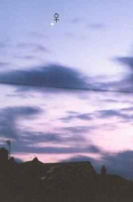
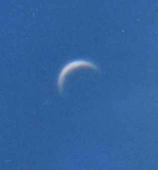
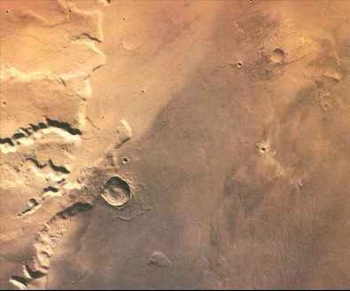
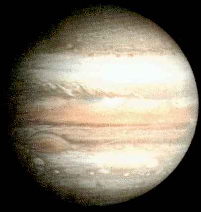
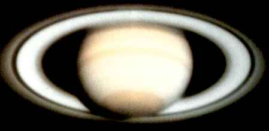
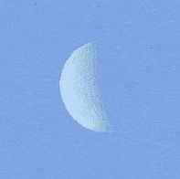
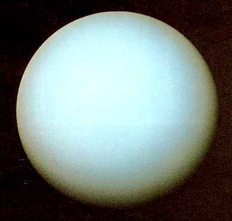
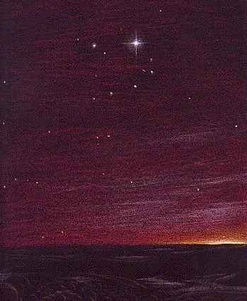

Introducing the Night Sky
Part 3
by John Harper


Venus shining brightly as an evening star.
(Photograph by J. Harper)
If one or more of these planets is present when you go out star-gazing, you should be able to identify each quite easily. Venus is always to be seen either in the western sky after sunset, when it shines with a pure white radiance far brighter than any other star, or in the early morning sky before sunrise and in the eastern part of the sky. In ancient times the earliest astronomers believed that these two appearances of Venus were two different planets. When in the evening sky, Venus was called Hesperus, the Evening Star, and when seen in the morning it was Phosphorus, the Morning Star. Venus is so bright that it can never be mistaken and is the only object in the sky, with the exception of the sun and moon, and possibly Jupiter, that can produce a shadow. In order to see a shadow cast by Venus, you must hold your finger between the planet and a sheet of white paper. Do this in a dark corner of the garden, well away from street lights and when the planet is seen against a dark sky. You should then be able to see distinctly the shadow of your finger on the paper cast by Venus. Incidentally, Venus is so bright that at certain times, it can be seen in full daylight too, provided that you know exactly where to look for it. Of all the planets, Venus can be our nearest neighbour in space, after the moon. It is a planet which resembles the earth in size, but beneath a continuous cloud cover, astronomers have discovered it to have a dense carbon dioxide atmosphere, with a seering surface temperatureof 500 deg C, a place where the greenhouse effect has run riot. When approaching its nearest to earth, or shortly afterwards, it is possible to see this planet looking like a tiny crescent moon through sharply focussed, firmly fixed binoculars. At such times as this, Venus is very close to us and lies just over 100 times further away than the moon.

Venus as a crescent in the daylight sky.
(Photograph by J. Harper)
Mars is a small planet - just over half the diameter of earth, and shines brightly in our skies for only several months every two years or so. However, even when it is no brighter than a star of the second magnitude, Mars can be recognised fairly easily because of its definite reddish colour. This distinctive red colour is due to sunlight being reflected from the planet's cold, ochre-coloured deserts. When at its nearest to us, the Red Planet is a beautiful object, shining steadily and brightly like a glowing ember in the night sky.

The deserts of Mars.
Jupiter is the largest of all the planets in the sun's family, its diameter eleven times that of the earth. Each year, this magnificent planet can be seen shining brightly and steadily with a cream coloured light, a little fainter than Venus, but always brighter than any other star. Point your binoculars at Jupiter, and you will see tiny, star-like points close by the side of its oval shaped disc. These points of light are the four satellites, or moons, of Jupiter, discovered by Galileo in the seventeenth century. It is fascinating to watch their ever-changing positions, night by night,as they circle the mighty planet.

Jupiter
Which brings us to Saturn. Of all the planets, this is the most visually beautiful, with its glorious system of rings, but in order to see them, you will need a small telescope. Saturn appears as a fairly bright yellow- coloured star when it is at its nearest, shining steadily around magnitude zero.

Saturn
Mercury, the innermost planet, is always very near to the sun and can be seen only with difficulty at certain times in the year. During Spring evenings and Autumn mornings, when it lies as far away from the sun as possible, you may spot elusive Mercury twinkling like a bright star, almost lost in the bright twilight, low in the sky.

Mercury observed in daylight.
(Drawing by J. Harper, from an observation)
Uranus and Neptune on the other hand, are extremely faint, and although readily visible in binoculars, look like faint stars of sixth and seventh magnitudes. Frozen Pluto, so very small and at a great distance can be seen only with astronomical telescopes of reasonable power.

Uranus
Unlike the stars, which are giving out their own light, planets are dark bodies not giving out any light of their own. What you see when you look at a planet is reflected light from the sun. This is the essential difference between a planet and a star.

Earth from Mars
(Painting by John Harper)

<< Back to Part 2 On to Part 4 >>
Written by John Harper for Diarmid's Observatory